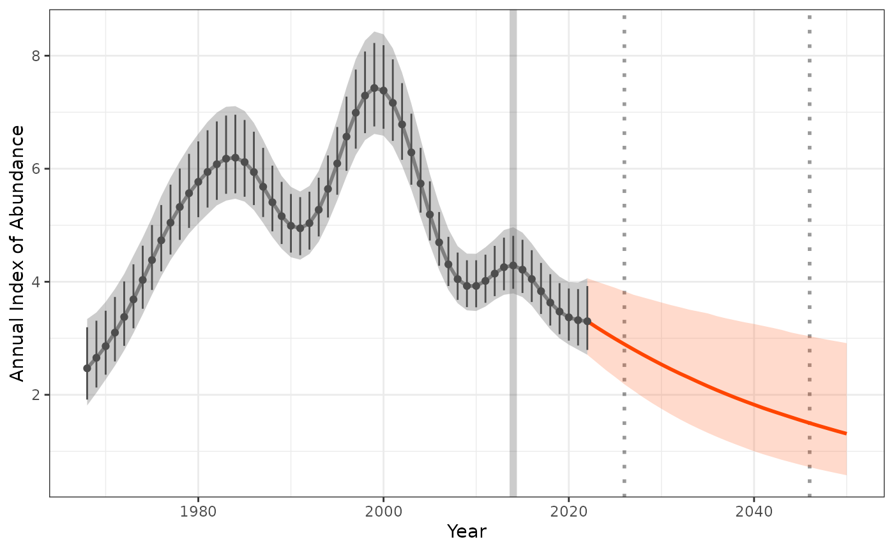
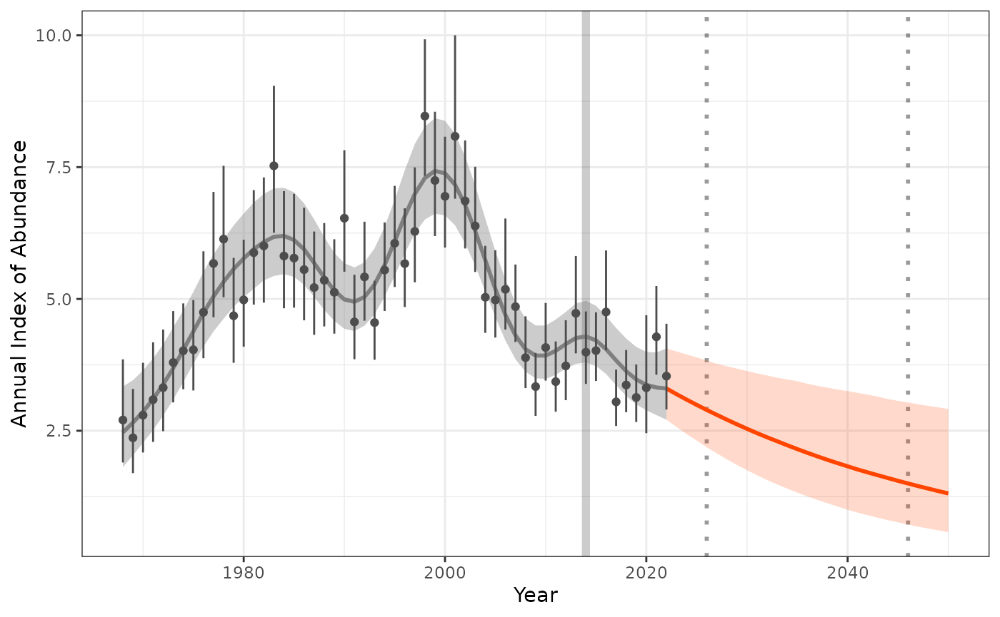

Estimate-and-project-trends-using-BBS-smooth-dataset
Source:vignettes/Estimate-and-project-trends-using-BBS-smooth-dataset.Rmd
Estimate-and-project-trends-using-BBS-smooth-dataset.RmdThis vignette provides an alternate method for estimating and predicting trends, similar to those described in the base workflow with annual indices data input.
Rather than annual indices, this workflow uses draws of the posterior distributions of the smooth component of population trajectory, drawn from a GAMYE Breeding Bird Survey (BBS) model (using bbsBayes2 package).
Note: this vignette assumes you had already followed the steps outlined here
2. Extract the smooth component of bbsBayes2 fit
An example data set is provided within this package. This is the smooth component extracted from the full model of the Pacific Wren (“Troglodytes pacificus”), generated using the bbsBayes2 package. This data was kindly provided by A.C. Smith.
head(bbs_smooth_data)
#> year
#> iter 1968 1969 1970 1971 1972 1973 1974 1975
#> 1 2.729978 2.965852 3.224092 3.508184 3.820407 4.160304 4.522964 4.897980
#> 2 2.180160 2.358044 2.557778 2.789192 3.059712 3.370122 3.712222 4.069773
#> 3 2.259041 2.577236 2.918296 3.252798 3.549116 3.789648 3.980238 4.147139
#> 4 1.923366 2.205235 2.533100 2.915137 3.350895 3.823103 4.294544 4.716662
#> 5 2.009798 2.291077 2.604190 2.943246 3.302940 3.682355 4.084891 4.513179
#> 6 2.394731 2.573529 2.772608 3.000554 3.263123 3.559511 3.880811 4.211895
#> year
#> iter 1976 1977 1978 1979 1980 1981 1982 1983
#> 1 5.269625 5.619058 5.928013 6.182812 6.376585 6.508391 6.579548 6.589843
#> 2 4.423286 4.757012 5.064161 5.346374 5.607431 5.843976 6.038604 6.159807
#> 3 4.324938 4.543100 4.816500 5.140478 5.490087 5.824123 6.094279 6.257846
#> 4 5.050248 5.286581 5.453771 5.602544 5.781926 6.016881 6.293841 6.557515
#> 5 4.960737 5.404857 5.806037 6.118549 6.309376 6.375844 6.348706 6.277713
#> 6 4.536078 4.841018 5.121579 5.377638 5.607507 5.800539 5.933948 5.977824
#> year
#> iter 1984 1985 1986 1987 1988 1989 1990 1991
#> 1 6.536062 6.414898 6.229404 5.995094 5.741936 5.509966 5.340945 5.270456
#> 2 6.171891 6.052408 5.808446 5.480362 5.130028 4.821180 4.604347 4.511332
#> 3 6.289585 6.188977 5.980397 5.707314 5.422726 5.179033 5.020492 4.979249
#> 4 6.724597 6.718401 6.510758 6.142977 5.708274 5.310873 5.032655 4.922386
#> 5 6.209481 6.169424 6.154813 6.138751 6.085106 5.969680 5.798189 5.609631
#> 6 5.908269 5.723119 5.450447 5.142996 4.862249 4.662082 4.580235 4.636929
#> year
#> iter 1992 1993 1994 1995 1996 1997 1998 1999
#> 1 5.322486 5.506461 5.813930 6.214739 6.655145 7.062988 7.362094 7.492209
#> 2 4.557132 4.743027 5.057535 5.474650 5.951724 6.430529 6.843185 7.123068
#> 3 5.073930 5.308171 5.667561 6.115830 6.594730 7.032212 7.358922 7.525325
#> 4 5.000133 5.263585 5.688082 6.221409 6.781028 7.263337 7.568202 7.630270
#> 5 5.463285 5.419201 5.522712 5.794446 6.220005 6.737256 7.230399 7.550883
#> 6 4.836438 5.167061 5.599342 6.085713 6.565595 6.976354 7.265568 7.398740
#> year
#> iter 2000 2001 2002 2003 2004 2005 2006 2007
#> 1 7.425022 7.168588 6.760787 6.257063 5.718420 5.201836 4.753435 4.404603
#> 2 7.218313 7.104489 6.793185 6.331816 5.792746 5.254788 4.784880 4.427244
#> 3 7.510353 7.319034 6.975065 6.515436 5.988297 5.450116 4.958223 4.560988
#> 4 7.439697 7.040574 6.509797 5.930163 5.370078 4.875030 4.468462 4.157003
#> 5 7.573341 7.260025 6.682954 5.983382 5.303170 4.738263 4.330404 4.081430
#> 6 7.360144 7.150678 6.787302 6.304424 5.753283 5.194684 4.686880 4.273825
#> year
#> iter 2008 2009 2010 2011 2012 2013 2014 2015
#> 1 4.170835 4.052234 4.033924 4.085386 4.161336 4.208617 4.181356 4.059196
#> 2 4.201584 4.106244 4.120939 4.207881 4.314268 4.382012 4.366160 4.253370
#> 3 4.289901 4.156584 4.152207 4.246085 4.384809 4.498772 4.522813 4.424717
#> 4 3.936579 3.797053 3.724952 3.704665 3.718892 3.748913 3.775386 3.780268
#> 5 3.970325 3.963597 4.020554 4.097220 4.152581 4.156399 4.095348 3.973656
#> 6 3.979826 3.809955 3.753372 3.785522 3.870048 3.963062 4.022771 4.022707
#> year
#> iter 2016 2017 2018 2019 2020 2021 2022
#> 1 3.855456 3.608254 3.360602 3.143095 2.966887 2.826042 2.705600
#> 2 4.066499 3.851125 3.653388 3.503481 3.409699 3.361066 3.335758
#> 3 4.220988 3.965106 3.717786 3.521188 3.389055 3.310015 3.258705
#> 4 3.749541 3.675965 3.560504 3.411573 3.242283 3.066544 2.895393
#> 5 3.807933 3.618983 3.424836 3.237175 3.061167 2.897311 2.743786
#> 6 3.960515 3.855870 3.738417 3.633917 3.555333 3.501284 3.460793This dataset contains a modelled trajectory (annual indices) for each year (column) (1968 to 2022) and for each draw (row). This example dataset contains 4000 draws.
We can filter this data by year or change the format, using the longform parameter.
indat3 <- as.data.frame(bbs_smooth_data)
fitted_smooths_wide <- fit_smooths(indat3, start_yr = NA, end_yr = NA, longform = FALSE)
fitted_smooths <- fit_smooths(indat3, start_yr = NA, end_yr = NA, longform = TRUE)
3. Calculate trend
trend_sm <- get_trend(fitted_smooths, start_yr = 2014, end_yr = 2022, method = "gmean")
We can summarise the trend estimates to provide a median and confidence internal
trend_sm |>
dplyr::mutate(trend_q0.025 = quantile(trend_log, 0.025),
trend_q0.500 = quantile(trend_log,0.500),
trend_q0.975 = quantile(trend_log,0.975)) |>
dplyr::select(c(trend_q0.025, trend_q0.500, trend_q0.975)) |>
distinct()
#> # A tibble: 1 × 3
#> trend_q0.025 trend_q0.500 trend_q0.975
#> <dbl> <dbl> <dbl>
#> 1 -0.0563 -0.0329 -0.01064. Project trend
We can now use our modeled annual indices and estimated trends for our given years to project into the future.
preds_sm <- proj_trend(fitted_smooths, trend_sm, start_yr = 2023, proj_yr = 2050)
#> hold tight, running the numbers!
#> ================================================================================5. Plot the projected values
Now lets plot the results, to make a “pretty plot” we will use all the steps we worked through above. This includes 1) raw observed indices, 2) modeled indices, 3) projected indices generated from our trends.
Note in the plot below we only had the posterior draws input data and not the raw annual estimates. In these cases where no raw indices is supplied, values are based on 95% of distribution of data.
smooth_plot <- plot_trend(raw_indices = NULL,
model_indices = fitted_smooths,
pred_indices = preds_sm,
start_yr = 2014,
end_yr = 2022)
smooth_plotAlternatively we can add our raw annual indices data set to improve the aesthetics of the plot.
indat1 <- annual_indicies_data
smooth_plot2 <- plot_trend(raw_indices = indat1,
model_indices = fitted_smooths,
pred_indices = preds_sm,
start_yr = 2014,
end_yr = 2022)
smooth_plot2